Паймухина Айгуль
UX/UI designer
Продуктовый дизайнер с опытом 5+ лет в мобильных и веб-продуктах: B2B2C SaaS и Sport tech. Проектирую полный цикл: от гипотез и анализа требований до пользовательских сценариев, интерфейсов и проверки решений с пользователями.
В MAXIMA проработала регистрацию и онбординг, после внедрения которого выросла доля пользователей, пополнивших баланс сразу после регистрации.
В UDS провела полный UX/UI-редизайн и собрала дизайн-систему на базе Taiga UI.
Если смотреть очень долго…
…то ничего не произойдёт, увы :D Вспомните когда вы оказывались в подобной ситуации? Наверное, долго думать не придётся. Даже если вы не пользовались этим приложением, у вас наверняка есть приложение магазина у дома
Вы пришли в магазин…
…и хотите купить что-то со скидкой, получить кешбэк баллами или потратить уже накопленные баллы на что-то подешевле. А для этого нужно показать QR-код из приложения.
Чтобы получить или потратить баллы на кассе
Приложение открывают именно сейчас, а не заранее
А что если там не будет ловить и придётся долго ждать
Пользователь не может показать код сразу
Пользователи открывают UDS у кассы, чтобы показать QR-код, но код появляется только после загрузки приложения и перехода на нужный экран. В итоге человек ждёт под взглядом кассира и очереди, а оплата замедляется. У проблемы три стороны:
Есть ли боль на самом деле? 🤔
Реальна ли боль, или это моё ощущение, и как я планировала это проверять.
Сразу оговорюсь: я не проверяла данные аналитики, обратную связь, не вела наблюдения стоя у кассы и не проводила интервью.
Разбила бы по группам и проанализировала обращения в поддержку и отзывы в сторах. В сторах такие обращения очень редки — возможно, пользователь просто сразу удаляет приложение.
Провела бы наблюдение 15–20 оплат на кассе в 2–3 магазинах или кафе: ждёт ли очередь, сколько примерно времени занимает загрузка. Для чистоты эксперимента сама замерила бы, используя старенькие тестовые девайсы.
Изучила бы аналитику: разницу во времени от запуска до открытия кода в разных разрезах — на разных платформах, холодный и тёплый запуски, на старых девайсах. Проблема подтверждена, если медиана заметно больше 2–3 секунд, или у существенной части пользователей путь до кода — 5 секунд и больше.
Как я всё же успела изучить проблему
Я замерила путь до кода у самого приложения UDS и у других приложений со схожей механикой показа кода на кассе: длительность загрузки и количество тапов до кода.
iPhone 17, Wi-Fi, холодный запуск. Тапы — вместе с тапом по иконке.
Как показывают код конкуренты
Я посмотрела, как показывают код конкуренты, и какие ещё есть способы сделать это, не открывая приложение целиком. Магнит и Жизнь Март уже показывают код прямо на сплеше — значит, паттерн рабочий, но реализации отличаются.
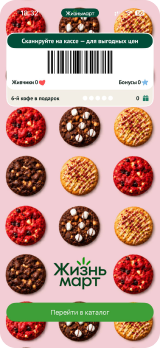
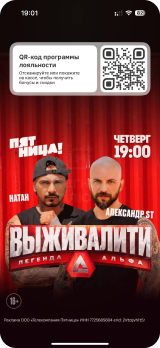
На сплеш-скрине Жизнь Март код показывается сразу, но чтобы попасть на главный экран, необходимо нажать на кнопку — на мой взгляд, лишнее действие. Что касается Магнита, сплеш загружается довольно быстро, практически сразу (не более 3 секунд), и этого времени может не хватить. Нужен сплеш, который даёт время на сканирование и сам уходит, когда код не нужен.
Если […], то […], потому что […]
ICE и как я его считала
Каждый критерий оценивается от 1 до 10, итог — произведение: I × C × E.
Impact — насколько сильно изменение повлияет на метрику и на скольких пользователей
Confidence — насколько мы уверены, что сработает: есть ли данные, примеры, исследования
Ease — насколько легко сделать: время разработки и риски
| Вариант | I | C | E | ICE |
|---|---|---|---|---|
| Сплеш с кодом и прогресс-баром | 8 | 7 | 6 | 336 |
| Сплеш с кнопкой (Жизнь Март) | 6 | 7 | 7 | 294 |
| Экран QR первым при запуске | 5 | 6 | 9 | 270 |
| Ускорить загрузку приложения | 6 | 5 | 3 | 90 |
| Wallet или виджет | 4 | 5 | 3 | 60 |
У всех гипотез есть нюансы. Сплеш с кнопкой, как у Жизнь Март, сделать чуть проще, но лишний тап получают все — даже те, кому код не нужен. Гипотеза с экраном кода первым выглядит самым простым вариантом, но главный экран и акции бизнесов теряют показы. Ускорение загрузки нужно обсуждать с разработкой — непонятно, куда уходит время и насколько сложно это оптимизировать. Wallet и виджеты мало кто настраивает, а код, который меняется раз в час, в них сложно обновлять.
Баллы — моя субъективная оценка; в реальной работе их нужно обсуждать с PM и разработкой.
QR-код на экране загрузки
Я выбрала сплеш с кодом и прогресс-баром, потому что он лучше всего закрывает проблему без побочных эффектов. Он работает у всех пользователей по умолчанию, без настройки. Он использует время, которое и так уходит на загрузку, и при каждом запуске показывает свежий код — это важно, ведь код меняется раз в час. Главный экран с акциями бизнесов при этом сохраняется. Прогресс-бар закрывает минусы конкурентов: в отличие от Магнита, код не исчезает раньше, чем кассир успеет его отсканировать, а в отличие от Жизнь Март, не нужно нажимать кнопку тем, кому код не нужен.
Как измерить
Гипотеза звучит так: если показывать код на сплеше с прогресс-баром, пользователи будут показывать его кассиру сразу, не переходя на главный экран, и при этом главный экран с акциями не потеряет заметно в показах. Поэтому метрик две группы: одни показывают, что лишний шаг исчез, другие — что мы ничего не сломали.
Доля пользователей, которые идут за кодом через главный экран сразу после запуска. Если человек успел отсканировать код на сплеше, на главный экран за кодом он уже не пойдёт — значит, чем ниже эта доля, тем лучше работает фича.
Главный экран — место, где бизнесы-партнёры показывают акции, это часть их ценности от UDS. Если пользователи начнут закрывать приложение сразу после сканирования на сплеше, бизнесы потеряют охват.
Ещё за чем стоит следить: количество ошибок загрузки кода и вылетов на старте. Новый параллельный запрос не должен ухудшить стабильность.
Код на сплеше убирает ожидание из самого напряжённого момента в продукте: пользователь показывает код, пока приложение ещё загружается. Следующий шаг — A/B-тест, который покажет, сколько людей действительно сканируют код прямо на сплеше и не теряет ли бизнес показы акций на главном экране.
Этот кейс научил меня отделять проблему от решения: проблема не в том, что приложение медленно грузится, а в том, что код недоступен в момент, когда он нужен. Такой взгляд открыл решение, которое не требует ускорять приложение — просто дать пользователю то, за чем он пришёл, пока загрузка ещё идёт.
Одно приложение, десятки программ лояльности
UDS — мобильное приложение-агрегатор программ лояльности для малого и среднего бизнеса. Пользователь показывает QR-код на кассе в кафе, салоне или магазине и получает или тратит баллы. У механики есть две особенности, из-за которых она сложнее, чем кажется.
Потратить их можно только там, где их начислили. У одного пользователя может быть по несколько баллов в десятке разных мест
Каждый бизнес задаёт его сам: где-то год, где-то месяц. Единого правила нет, и пользователь его не знает
Где мои баллы? 🤬
В поддержку регулярно приходили одни и те же вопросы, и в сторах появлялись похожие отзывы. В глазах пользователя баллы исчезали без причины. А если баллы могут пропасть в любой момент, копить их незачем.
Пользователь узнавал о сгорании постфактум и чувствовал себя обманутым, а для UDS и бизнеса это означало нагрузку на поддержку и падение доверия.
Главный вывод: правила сгорания сами по себе людей не возмущали. Возмущало то, что о них узнаёшь слишком поздно.
Почему информация о сгорании не доходила?
О начислении и сгорании баллов команда сообщала пушами. У команды было предположение, что пуши пользователи отключают, т. к. само приложение отправляет их очень много: о проведённых операциях, о новых акциях и т. д. Но это уже другая проблема, и задача по оптимизации количества пушей уже лежала в бэклоге.
Показать заранее
Главный экран открывают все, и пуши для этого не нужны. Поэтому информацию о балансе можно перенести туда.
Гипотеза. Если показывать там, сколько баллов начислено и сколько скоро сгорит, люди будут чаще возвращаться в приложение и в конкретный бизнес, тратить баллы, а вопросов в поддержку и негатива в сторах станет меньше, потому что информация о балансе дойдёт до всех, даже с отключёнными уведомлениями
Тем самым мы сделаем механику начисления и списания баллов более прозрачной для пользователя, повысим доверие и лояльность пользователя к продукту
Пользователь понимает, сколько у него баллов, где и до какого числа
Напоминание о сгорании приводит обратно в приложение и в конкретный бизнес
Меньше однотипных обращений в поддержку и негатива в сторах
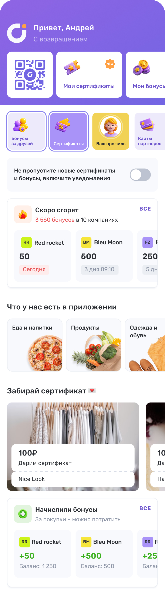
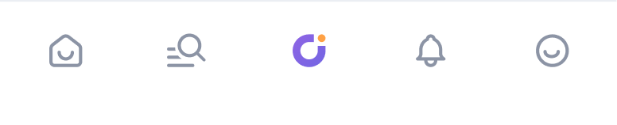
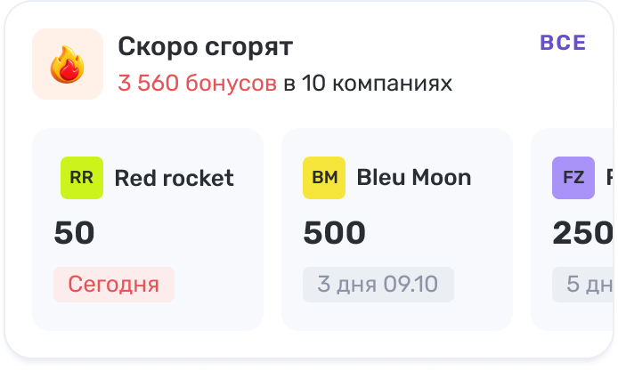
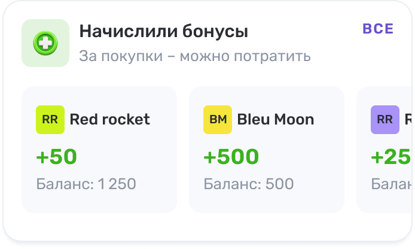
Два блока на главном экране
Если главный экран видят все, кто открывает приложение, даже с выключенными пушами, то логично вынести туда блоки сгорания и начисления, а подробности — на отдельные экраны.
Правила сгорания я не меняла — я сделала их видимыми заранее. Пуши остались, но перестали быть единственным каналом, через который пользователь узнаёт о своих баллах.
На что повлияет и как проверить
Гипотеза: если показывать сгорание и начисление на главном экране, люди будут успевать потратить баллы и реже писать в поддержку. Поэтому метрики отвечают на три вопроса: потратили ли баллы, вернулись ли в бизнес и стало ли меньше негатива. И одна защитная — чтобы не навредить главному экрану.
Доля баллов, которые потратили до даты сгорания. Если блок работает, сгорать будет меньше: человек узнаёт о сроке заранее и успевает прийти.
Тапы по блоку и экрану «Скоро сгорят» и повторные визиты — скан QR в той компании, чьи баллы сгорали. Ради этих визитов бизнес и платит UDS.
Обращения в поддержку на тему баллов и негативные отзывы в сторах: «куда делись баллы», «почему списалось меньше». Это прямой сигнал, что механика стала понятнее.
Новые блоки сдвигают акции бизнесов ниже. Если показы и тапы по акциям заметно упадут, бизнес-партнёры потеряют охват.
Как проверить. A/B-тест на пользователях, у которых есть сгорающие баллы: половина видит блоки, половина — нет. Тест длится не меньше 4 недель, чтобы захватить сроки сгорания у разных бизнесов. До старта заводим события: показ блока, тап «Все», тап по компании, скан QR в этой компании — и заранее фиксируем, какой рост доли потраченных баллов считаем успехом.
Негативных обращений стало меньше
После запуска блоков вопросов «куда делись мои баллы» стало заметно меньше: пользователи видят срок сгорания заранее и не узнают о нём постфактум.
Честно о цифре: A/B-теста не было, и в тот же период в продукте менялось и другое. Поэтому я считаю это сильным сигналом, а не доказательством — следующий шаг как раз в том, чтобы измерить вклад блоков.
Что делать дальше
Проверить основную метрику на контрольной группе и отделить эффект блоков от остальных изменений в продукте.
Сравнить, за сколько дней до сгорания показывать блок: слишком рано — его перестают замечать, слишком поздно — не успевают прийти.
Задача по сокращению пушей уже лежала в бэклоге. Если оставить пуш только о скором сгорании, его перестанут отключать, и канал снова заработает.
Дать компании видеть, сколько баллов её клиентов скоро сгорит, и запускать акцию «приходите потратить». Так сгорание превращается в повод для визита.
Этот кейс научил меня закладывать метрики до запуска: эффект был заметен, но доказать вклад именно блоков без контрольной группы нельзя.
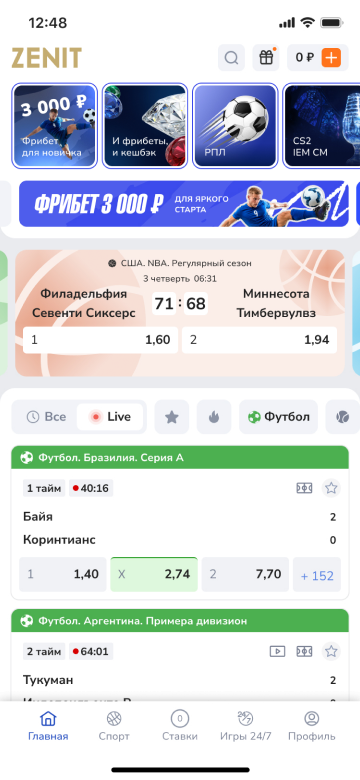
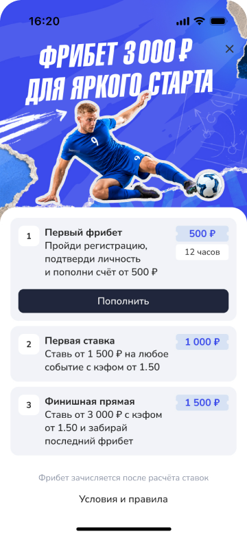
Приветственная акция TOP3000: онбординг нового игрока
Анализ флоу регистрации конкурентов, выявление отраслевых паттернов и проектирование онбординга с поэтапной механикой фрибета. Акция запущена в реальном продукте — валидирована реальными данными.
Продуктовая команда решила заменить прежнюю приветственную акцию на новую механику: бонус 3000 ₽ для новых игроков, выдаваемый тремя траншами (500 + 1000 + 1500 ₽) по мере активности.
Задача дизайна. Спроектировать флоу регистрации и экраны акции так, чтобы игрок не разочаровался, когда после регистрации получит только 500 ₽ из обещанных трёх тысяч
В чем настоящая проблема?
На первый взгляд проблема выглядит как недостаточно щедрый бонус или плохой трафик. Но анализ флоу показал другое: игрок сталкивается с разрывом между ожиданием и реальностью прямо в момент первого контакта с продуктом.
Маркетинг обещает крупную сумму. Игрок регистрируется в расчёте на неё — и сразу после первого шага получает только часть. Он не знал, что условий несколько. Он не знал, что сумма делится на части. Это не обман с юридической точки зрения, но это именно так ощущается.
Анализ конкурентов
Проанализировала флоу регистрации Winline, Olimpbet и Лиги Ставок. Ниже — скриншоты ключевых экранов каждого флоу. Ни один из трёх проанализированных конкурентов эту проблему не решает. Winline раскрывает только первый шаг из десяти. Olimpbet называет процент, но не итоговую сумму.
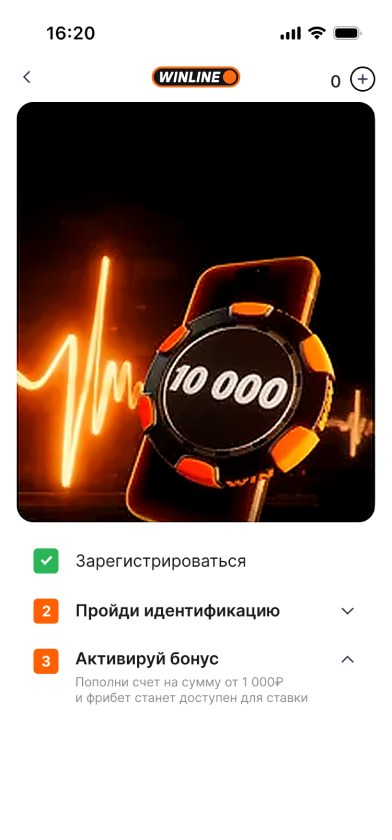
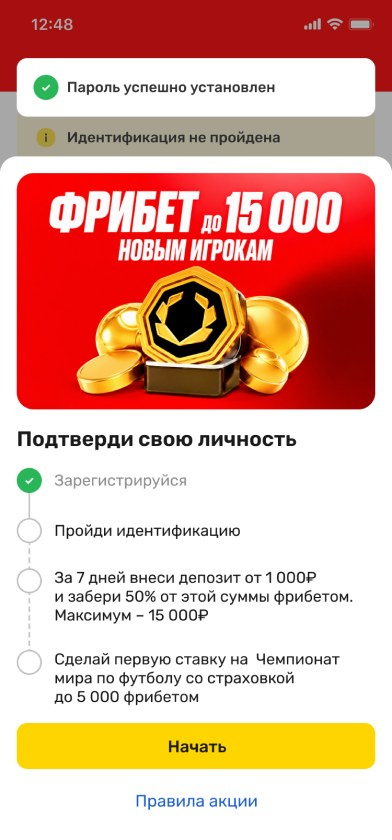
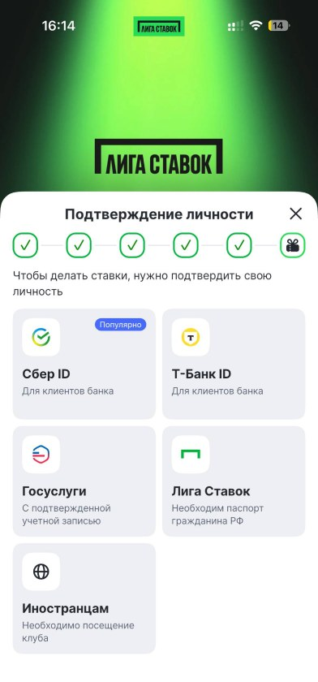
Winline — 10 000 ₽ (10 × 1 000 ₽). Экран объясняет, как получить первый фрибет 1 000 ₽, но скрывает, что таких шагов ещё девять — и каждый требует отдельного депозита в разные дни
Olimpbet — до 15 000 ₽ (50% от депозита). Условие сформулировано, но игрок не знает итоговую сумму фрибета до пополнения счёта: сумма зависит от депозита, который ещё не сделан.
Лига ставок. Обещает подарок, не объясняя ни что это, ни как его получить
Лига Ставок — до 8 000 ₽ (4 этапа). На экране с подарком показывается визуал, но не объясняется ни что такое фрибет, ни как и сколько раз его получить.
Общий паттерн. Никто из конкурентов не показывает полную картину механики заранее. Игрок узнаёт условия постепенно — и часто разочаровывается, когда реальность не совпадает с ожиданием от рекламного обещания
А что если объяснить сразу все правила?
Если показать игроку полную карту из трёх шагов с суммами и условиями до того, как он совершит первое действие, то доля игроков, дошедших до конца акции, вырастет, потому что разрыв между маркетинговым обещанием «3 000 ₽» и реальным первым начислением 500 ₽ исчезнет — игрок будет знать, чего ожидать, и воспримет каждый транш как запланированный шаг, а не как разочарование.
Если гипотеза верна, прозрачность условий устранит основную причину отвала — разочарование после первого шага.
Ключевое решение
Экран «Карта фрибета» — появляется сразу после идентификации и остаётся доступным на всём протяжении акции.
Что было проделано
Онбординг акции не существует отдельно — он встроен в каждую точку основного пути нового игрока.
TOP3000 против BONUS15K
После запуска акции на всех интерфейсах (МП, МВ, ДВ) сравнили TOP3000 с предыдущей приветственной акцией BONUS15K по когортным данным на органическом трафике.
Главный эффект механики трёх шагов — резкий рост retention: если при BONUS15K почти никто не доходил до конца акции (4%), то в TOP3000 каждый четвёртый завершил все три шага и получил полные 3000 ₽. Конверсия в повторный депозит выросла на 15 пп.
Динамика воронки регистрации
Параллельно с запуском акции улучшилась и сама воронка (данные по всем новым пользователям):
Данные: 01.07–12.08.2026 vs 01.01–31.03.2026
Что делать дальше
Аналитика показывает, где механика работает хорошо, а где есть нераскрытый потенциал.